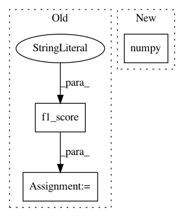

0880e905186997ec6545a65c277a4848e0505eed,examples/ppi.py,,test,#Any#,59
Before Change
with torch.no_grad():
out = model(data.x.to(device), data.edge_index.to(device))
pred = (out > 0).float().cpu()
micro_f1 = metrics.f1_score(data.y, pred, average="micro")
total_micro_f1 += micro_f1 * data.num_graphs
return total_micro_f1 / len(loader.dataset)
After Change
y, pred = torch.cat(ys, dim=0), torch.cat(preds, dim=0)
if pred.sum().item() > 0:
return metrics.f1_score(y.numpy(), pred.numpy(), average="micro")
else:
return 0
In pattern: SUPERPATTERN
Frequency: 3
Non-data size: 3
Instances
Project Name: rusty1s/pytorch_geometric
Commit Name: 0880e905186997ec6545a65c277a4848e0505eed
Time: 2019-04-08
Author: matthias.fey@tu-dortmund.de
File Name: examples/ppi.py
Class Name:
Method Name: test
Project Name: dmlc/dgl
Commit Name: 264d96cdf54667c0efaa943185ebe4f121a423ad
Time: 2020-08-07
Author: expye@outlook.com
File Name: examples/pytorch/graphsage/train_sampling_unsupervised.py
Class Name:
Method Name: compute_acc
Project Name: rusty1s/pytorch_geometric
Commit Name: 49675c507e5afa9165e378fd738a15a16f323078
Time: 2019-06-13
Author: matthias.fey@tu-dortmund.de
File Name: examples/geniepath.py
Class Name:
Method Name: test